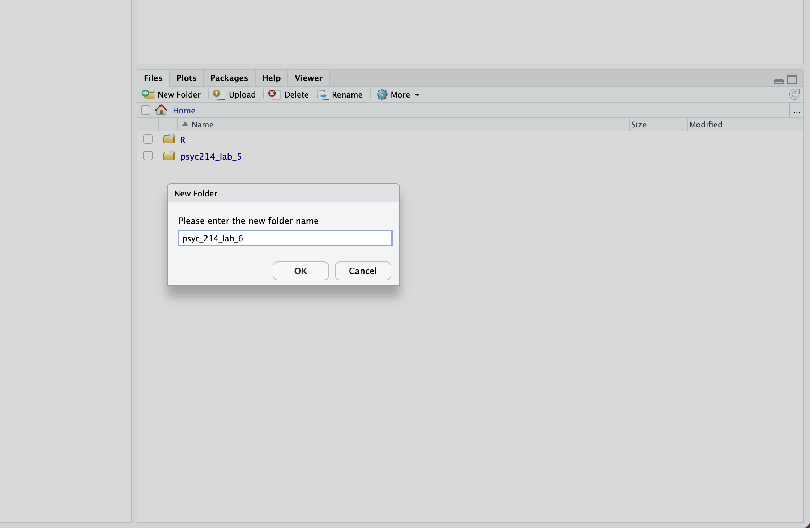
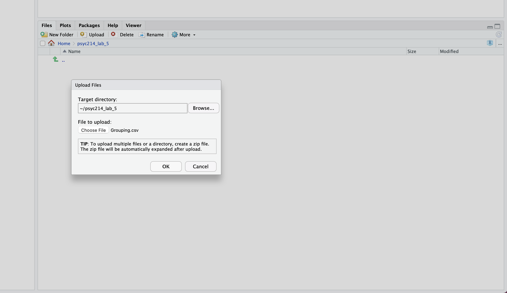

setwd("~/psyc214_lab_5")5. Revision of One-Factor ANOVA
Mark Hurlstone, Richard Philpot
I have noticed Richard’s penchant for commencing these sessions with some words of philosophical wisdom to motivate and inspire you and will continue the trend. Here’s one of my favorite quotes from Frederick Nietzsche. It embodies the Stoic philosophical principle of Amor Fati, which is a mindset that entails a commitment to making the best out of anything that happens, whether good or bad. It’s about treating every moment, no matter how challenging and difficult, as something to be embraced rather than avoided.
Not merely bear what is necessary, still less conceal it … but love it. –Frederick Nietzsche

Learning Objectives
Over the past four weeks, Richard has given you a comprehensive introduction to single-factor ANOVA. In Weeks 6-10, I’ll be taking over the reigns and teaching you about factorial ANOVA. This is the version of ANOVA that we use to analyze the results of factorial studies where we have two or more factors. Before moving onto factorial ANOVA, it is important to consolidate some of the key things that Richard has taught you so far. Accordingly, in this week’s lab class we will be reviewing some (but not all) of the key things you have learned about one-factor ANOVA in the context of R. Specifically, we will be running through: (a) the sequence of steps for performing a between-participants one-factor ANOVA, and (b) the sequence of steps for performing a within-participants one-factor ANOVA. As there is a lot to cover, we will be working with clean data sets and there will be no debugging exercises in this session. However, when copying the coding examples into R, please pay close attention to each line of code and the associated comments, so it is clear what the code is actually doing. Where possible, type the code out manually yourself as you will learn better this way.
Getting Started
To get started, we first need to log into the R Studio Server.
You can access Lancaster University’s RStudio Server at http://psy-rstudio.lancaster.ac.uk. At present, you will need to be on campus, or connected to the VPN to access this. If you do not yet have Eduroam (the university wifi) available on your personal device, please follow the instructions from the PSYC214 Announcement Page https://modules.lancaster.ac.uk/mod/forum/discuss.php?d=437608

If you are on Eduroam (or VPN if off campus) and have accessed the R Studio Server from the URL above, you will now see a login screen (see above). Please use your normal Lancaster University username (e.g., bloggsj). Your own individual RStudio Server password was sent in an email, prior to the first lab, by Kay Rawlins: email header ‘R Studio Server login details’. Please make sure you have this.
Once you are logged into the server, create a folder for today’s session. Navigate to the bottom right panel (see figure below) and under the Files option select the New Folder option. Name the new folder psyc214_lab_5. Please ensure that you spell this correctly otherwise when you set the directory using the command given below it will return an error.

Now that you have created a folder for today’s session, it’s time to add the Week 5 data files. Head on over to the PSYC214 Moodle page, access the lab folder for Week 5, and download the files Grouping.csv and WordLength.csv to your desktop. Next, in the RStudio Server open your new pscy214_lab_5 folder. When in the new folder, select the Upload tab (see figure below). This will present a box that will ask where the data is that you want to upload. Click on Browse, find the Grouping.csv file on your desktop and click OK. Now repeat this process, this time uploading the WordLength.csv file.

Se we can save this session on the server, click File on the top ribbon and select New project. Next, select existing directory and name the working directory ~/psyc214_lab_5 before selecting create project.
Finally, open a script for executing today’s coding exercises. Navigate to the top left pane of RStudio, select File -> New File -> R Script. Working from a script will make it easier to edit your code and you will be able to save your work for a later date.

Let’s set our working directory:
Before moving on, let’s load the relevant libraries that we will be using in today’s session:
library("tidyverse")
library("tidyr")
library("rstatix")
library("effectsize")
library("ggpubr")Today’s Lab Activities
A Between-Participants Single-Factor Study
A short-term memory researcher wants to know whether objectively grouping lists of verbal items improves verbal short-term memory performance. She administers a serial recall task to three different groups of participants (described below). In the study phase of this task, participants are given a list of six words to study (e.g., gorilla, leprosy, nursery, radio, botany, calcium) spoken at a rate of one word per second, with a brief pause between each word. In the test phase, immediately after the final item has been spoken, participants must recall the list of words (by speaking them aloud) in their original presentation order. The dependent measure of interest is verbal recall accuracy: the percentage of words recalled in their correct position in the study list. For example, suppose the participant recalled gorilla, leprosy, radio, nursery, botany, calcium in response to the above study list. The first two items (gorilla, leprosy) and last two items (botany, calcium) have been recalled in their correct positions, but the middle two items (nursery, radio) have exchanged positions with one another, and are therefore incorrect. Thus, in this example, the participant recalled 4/6 = 67% of items accurately. The researcher administers to each participant a total of 20 serial recall study-test trials, with each study list comprising the same set of words, but presented in a different random order. The final score for each participant is the percentage of words recalled accurately, averaged across all 20 study-test trials.
There are 90 participants in total, allocated randomly and evenly to one of the following three conditions:
Ungrouped: in this condition, the study lists are presented in an ungrouped fashion. That is, the temporal pause separating each spoken word in study lists is always 0.5 seconds.
2-2-2: in this condition, the study lists are organised into three groups, each containing two items. This is achieved by extending the temporal pauses after the second and fourth items in study lists from 0.5 seconds to 1.5 seconds.
3-3: in this condition, the study lists are organised into two groups, each containing three items. This is achieved by extending the temporal pause after the third item in study lists from 0.5 seconds to 1.5 seconds.
The researcher wants to know whether (a) grouping study lists improves verbal recall accuracy compared to an ungrouped scenario, and (b) whether the degree of improvement depends on the type of grouping used (grouping in twos \(vs.\) grouping in threes). The researcher has chosen to run the study as a between-participants design rather than a within-participants design because she is worried about the possibility of carryover effects. Specifically, if the study was run as a within-participants design there is a risk that participants may carry over a grouping strategy from one condtion into another condition. For example, having completed the 3-3 condition, participants may then spontaneously group the ungrouped lists in the ungrouped condition into threes. This would make interpretation of the results of the experiment difficult, hence the decision to use a between-participants design.
The researcher has two hypotheses she wants to test. Specifically, she predicts that (1) verbal recall accuracy will be higher in the 2-2-2 condition than in the ungrouped condition, and (2) that verbal recall accuracy will be higher, in turn, in the 3-3 condition than in the 2-2-2 condition. She has thus decided a priori to conduct planned comparisons comparing accuracy for the ungrouped vs. 2-2-2 conditions, and the 2-2-2 vs. 3-3 conditions.
First things first, let’s load the data set:
# Import the data
groupingData = read_csv("data/Grouping.csv")
# Make sure Condition is a factor with levels ordered: ungrouped, 2-2-2, 3-3
groupingData$Condition = factor(groupingData$Condition, levels = c("Ungrouped","2-2-2","3-3"))
# Print the data
(groupingData)# A tibble: 90 × 3
Participant Condition Accuracy
<dbl> <fct> <dbl>
1 1 Ungrouped 62.7
2 2 Ungrouped 53.7
3 3 Ungrouped 68.7
4 4 Ungrouped 77.3
5 5 Ungrouped 60.2
6 6 Ungrouped 63.7
7 7 Ungrouped 46.9
8 8 Ungrouped 67.4
9 9 Ungrouped 60.4
10 10 Ungrouped 49.5
# … with 80 more rowsWe have three columns: Participant (the participant number ranging from 1 to 90), Condition (the condition to which each participant was allocated: ungrouped vs. 2-2-2 vs. 3-3), and Accuracy (the percentage of list items recalled in the correct order, averaged across all study-test trials). You can take a closer look at the data using view(groupingData) which will open up the full data set in a new window.
Descriptives statistics and assumption checks
Let’s begin by calling some descriptive statistics. Specifically, we want the mean and sd of the Accuracy dependent variable, as a function of our Condition factor. We can obtain these quantities using the get_summary_stats() function in the rstatix package:
# Get descriptive statistics
descriptives = groupingData %>%
# Organise the output by Condition
group_by(Condition) %>%
# Request mean and standard deviation
get_summary_stats(Accuracy, show = c("mean", "sd"))
# Round the results to *at least* two-decimal places
options(digits = 4)
# Print the results
print.data.frame(descriptives) Condition variable n mean sd
1 Ungrouped Accuracy 30 61.99 11.416
2 2-2-2 Accuracy 30 63.75 9.177
3 3-3 Accuracy 30 72.19 9.441Okay, let’s take a look at these descriptive statistics. Starting with the means, we can see that the means for the ungrouped and 2-2-2 conditions are very similar—it does not look like organizing study lists into three groups of two items improved performance. However, the mean for the 3-3 condition is much larger than the means for the ungrouped and 2-2-2 conditions, suggesting that organising the study list into two groups of three items did improve performance. Turning to the standard deviations, these are very similar for each of the three conditions, so it does not look like the data violate the homogeneity of variance assumption. However, let’s run Levene’s test for equality of variances to verify if that is indeed the case.
We can execute Levene’s test on our data using the levene_test() function in the rstatix package:
# Levene's test for homogeneity of variance
groupingData %>%
levene_test(Accuracy ~ Condition)# A tibble: 1 × 4
df1 df2 statistic p
<int> <int> <dbl> <dbl>
1 2 87 1.24 0.295The test result is nonsignificant (p = .295), suggesting that the variances do not differ systematically. In short, using Levene’s test criterion, we can be satisfied that the homogeneity of variance assumption has been met.
So far so good, let’s now check to see if there are any outliers or extreme values in the data for each of our three conditions. We can do this using the identify_outliers function contained in the rstatix package:
groupingData %>%
# Organise the output by Condition
group_by(Condition) %>%
# Identify outliers and extreme values of our dependent measure
identify_outliers(Accuracy)# A tibble: 1 × 5
Condition Participant Accuracy is.outlier is.extreme
<fct> <dbl> <dbl> <lgl> <lgl>
1 3-3 82 96.3 TRUE FALSE We have a single outlier in the 3-3 condition—one participant’s score is quite a bit larger than the other scores in the distribution. However, as it is only a single non-extreme value it will not exert undue influence on the data and we can safely proceeed without having to remove, replace, or transform it.
Let us now establish whether our data satisfy the assumption of normality. To do this, we can run the Shapiro-Wilk test, which you will recall tests whether data are normally distributed. We can do this using the shapiro_test() function in the rstatix package:
# Shapiro Wilk test for normality
groupingData %>%
# Organise output by Condition
group_by(Condition) %>%
# Run Shapiro Wilk tests
shapiro_test(Accuracy)# A tibble: 3 × 4
Condition variable statistic p
<fct> <chr> <dbl> <dbl>
1 Ungrouped Accuracy 0.938 0.0788
2 2-2-2 Accuracy 0.971 0.563
3 3-3 Accuracy 0.974 0.648 The test statistics are nonsignificant for all three conditions (all p > .05), although only marginally so for the ungrouped condition. This indicates that the distributions of scores do not differ significantly from a normal distribution. We can therefore be satisfied that our data meet the assumption of normality. Remember that the Shapiro-Wilk test is sensitive to sample size—as sample size increases, the test becomes less accurate. The accepted rule of thumb is that if the number of observations (i.e., participants) in each condition is less than 50, then the Shapiro-Wilk test should provide an accurate test result. However, if the number of observations is above this value, then the test result may be inaccurate, so you should instead inspect the QQ plots of the data to determine if the normality assumption has been met. We have 30 observations per condition, so we can safely rely on the results of the Shapiro-Wilk test in this instance. Accordingly, we won’t bother looking at the QQ plots on this occasion.
ANOVA and planned comparisons
Okay, we have performed our checks and we are now ready to run our ANOVA. We can do this using the aov function:
# Our model with Accuracy as the DV and Condition as the factor
groupingModel = aov(data = groupingData, Accuracy ~ Condition)
# Ensure we get exact p values rather than scientific notation
options(scipen = 999)
# Create model summary
summary(groupingModel) Df Sum Sq Mean Sq F value Pr(>F)
Condition 2 1783 891 8.8 0.00033 ***
Residuals 87 8807 101
---
Signif. codes: 0 '***' 0.001 '**' 0.01 '*' 0.05 '.' 0.1 ' ' 1Looking at the table, the F value is 8.805, which is rather large as \(F\) values go, so it comes as no surprise to find when we look at the p value that the effect of condition is significant (p < .001). The large F value and small p value imply that the effect of condition is large, but let’s verify this by looking at the effect size. We can do this using the effectsize() function in the effectsize package:
# *** ENTER YOUR OWN CODE HERE FOR CALCULATIING THE ETA-SQUARED EFFECT SIZE FOR THE EFFECT OF CONDITION ***# Effect Size for ANOVA
Parameter | Eta2 | 95% CI
-------------------------------
Condition | 0.17 | [0.06, 1.00]
- One-sided CIs: upper bound fixed at [1.00].The \(\eta^2\) effect size is 0.17, which represents a large effect consistent with our expectations based on the results of our ANOVA (reminder: 0.01 = small effect; 0.06 = medium effect; 0.14 = large effect).
Remember that because there are three levels in our condition factor, the ANOVA only tells us that there are differences between the means of our groups, but not where those differences are located. So, we need to conduct some follow-up tests. In this case, the researcher decided to conduct planned comparisons comparing the ungrouped and 2-2-2 conditions, and the 2-2-2 and 3-3 conditions. We can perform these comparisons using the pairwise_t_test() function in the rstatix package:
groupingData %>%
# Execute independent-samples t-tests - remember to set pool.sd = FALSE
# and var.equal = TRUE
pairwise_t_test(Accuracy ~ Condition, pool.sd = FALSE, var.equal = TRUE,
# Just generate the two comparisons of interest: ungrouped vs. 2-2-2
# and 2-2-2 vs. 3-3
comparisons = list(c("Ungrouped","2-2-2"), c("2-2-2","3-3"))) %>%
# Ensure we get exact p values rather than scientific notation
p_format(digits = 4, leading.zero = FALSE) # A tibble: 2 × 10
.y. group1 group2 n1 n2 statistic df p p.adj p.adj.si…¹
* <chr> <chr> <chr> <int> <int> <dbl> <dbl> <chr> <chr> <chr>
1 Accuracy Ungrouped 2-2-2 30 30 -0.657 58 .514 .514 ns
2 Accuracy 2-2-2 3-3 30 30 -3.51 58 .000873 .002 **
# … with abbreviated variable name ¹p.adj.signifSince we are only performing two planned comparisons, I haven’t bothered to invoke the Bonferroni correction (annoyingly, the table includes the Bonferroni adjusted p value in the penultimate column, p.adj, despite the fact that we haven’t request it explicitly! Just make sure if you are not using the correction that you read the values from the column labelled p). Consistent with our intuitions when inspecting the descriptive statistics, we can see from inspection of the table that the comparison between the ungrouped and 2-2-2 conditions is nonsignificant (p = .514), whereas the comparison between the 2-2-2 and 3-3 conditions is significant (p < .001).
The next step is to get the Cohen’s d effect size for each of our planned comparisons. We can get the Cohen’s d effect size for the ungrouped vs. 2-2-2 comparison using the following code which makes use of the cohens_d() function from the rstatix package:
# Let's break down what the piece of code below is doing:
# The function cohens_d() requires that we specify the two groups we wish to produce our d value for along with
# the dependent variable.
# The first argument, groupingData$Accuracy[groupingData$Condition == "Ungrouped"], tells R that for the first
# group we want the variable Accuracy in the data set groupingData to be the dependent variable (groupingData$Accuracy) and we want the first group to be the ungrouped condition ([groupingData$Condition == "Ungrouped"])
# The second argument, groupingData$Accuracy[groupingData$Condition == "2-2-2"], tells R that for the second
# group we also want the variable Accuracy in the data set groupingData to be the dependent variable (groupingData$Accuracy) and we want the second group to be the 2-2-2 condition ([groupingData$Condition == "2-2-2"])
# Cohen's d for ungrouped vs. 2-2-2
cohens_d(groupingData$Accuracy[groupingData$Condition == "Ungrouped"],groupingData$Accuracy[groupingData$Condition == "2-2-2"])Cohen's d | 95% CI
-------------------------
-0.17 | [-0.68, 0.34]
- Estimated using pooled SD.For the ungrouped vs. 2-2-2 comparison, the Cohen’s d effect size is equal to –0.17, which represents a small effect (reminder: 0.2 = small effect, 0.5 = moderate effect, 0.8 = large effect; Cohen, 1988).
Now, let’s get the Cohen’s d effect size for the 2-2-2 vs. 3-3 comparison:
# *** ENTER YOUR OWN CODE HERE FOR CALCULATING THE COHEN'S D EFFECT SIZE FOR THE 2-2-2 VS. 3-3 COMPARISON ***Cohen's d | 95% CI
--------------------------
-0.91 | [-1.43, -0.37]
- Estimated using pooled SD.For the 2-2-2 vs. 3-3 comparison, the Cohen’s d effect size is equal to –0.91, which represents a large effect.
Writing up the results
A single-factor between-participants Analysis of Variance (ANOVA) was performed, with condition as the independent variable (control vs. 2-2-2 vs. 3-3) and verbal recall accuracy as the dependent variable. There was a significant effect of condition, F(2, 87) = 8.81, p < .001, \(\eta^2\) = .17. Planned comparisons revealed that verbal recall accuracy did not differ significantly between the ungrouped condition (M = 62.00, SD = 11.40) and the 2-2-2 condition (M = 63.80, SD = 9.18), t(58) = –0.657, \(p\) = .514, d = –.17, whereas verbal recall accuracy was higher in the 3-3 condition (M = 72.20, SD = 9.44) than in the 2-2-2 condition, t(58) = –3.51, \(p\) < .001, d = –.91.
Note: you can also include the 95% CIs for the \(\eta^2\) and Cohen’s d effect sizes (as Richard has showed you in previous labs) but I haven’t included them above. Their inclusion is optional and since I have not requested you include them in your PSYC204 Short Report CWA, I thought you might think me hypocritical if I included them here (I may be many things, but I’m not a hypocrite).
Okay, that’s all the exercises for the first data set complete, well done, but there’s no time for a break because we have another data set to contend with.
A Within-Participants Single-Factor Study
A short-term memory researcher wants to know whether verbal short-term memory is sensitive to the syllabic length of to-be-remembered words (i.e., the number of syllables they contain). She recruits a single group of 75 participants to complete the same serial recall task described in the previous example. The researcher manipulates word length—the number of syllables in to-be-remembered words, across three different conditions:
Short words: in this condition, study lists are composed of random orderings of six one-syllable words (stoat, mumps, school, Greece, switch, maths, scroll, zinc).
Medium words: in this condition, study lists are composed of random orderings of six three-syllable words (gorilla, leprosy, nursery, Mexico, radio, botany, bulletin, calcium).
Long words: in this condition, study lists are composed of random orderings of six five-syllable words (hippopotamus, tuberculosis, university, Yugoslavia, refrigerator, physiology, periodical, aluminium).
For each condition, there are 10 study-test serial recall trials. The same group of participants attempts all three conditions, but in different counterbalanced orders. The dependent measure is once again verbal recall accuracy.
The researcher expects verbal recall accuracy will decrease with increasing word length. That is, accuracy is expected to be highest for short words, lowest for long words, with medium words falling in between.
First things first, let’s load the data set:
# *** ENTER YOUR OWN CODE HERE FOR IMPORTING THE DATA. MAKE SURE YOU NAME THE DATA "wLengthData" ***We have four columns: Participant (the participant number ranging from 1 to 75), Short_Words (percentage of list items recalled in the correct order for the short word condition), Medium_Words (percentage of list items recalled in the correct order for the medium word condition), and Long_Words (percentage of list items recalled in the correct order for the long word condition). The data are therefore in so-called “wide format” (Richard discussed the distinction between wide format and long format in the last practical session)—each repeated measurement (short words, medium words, long words) has its own column and contains the values of the dependent variable for that measurement. Whenever we use repeated measurements, that is, when we employ a within-participants design, the resulting data is stored in wide format.
However, as Richard told you in your Week 4 lab session, to analyse such data in R, we first need to convert the data from wide format into long format. We can do this using the following piece of code:
# This gathers the data in Short_Words, Medium_Words, and Long_Words within the data frame "wLengthData" and reorganises them into two columns, Condition (containing the three levels of our repeated measurement) and Accuracy (verbal recall accuracy), before assigning them to a new data frame "wLengthDataLong". The argument factor_key = TRUE ensures that the new column Condition is treated as a factor.
wLengthDataLong = gather(wLengthData,Condition,Accuracy,Short_Words:Long_Words,factor_key = TRUE)
# Print the data
(wLengthDataLong) # A tibble: 225 × 3
Participant Condition Accuracy
<dbl> <fct> <dbl>
1 1 Short_Words 79.8
2 2 Short_Words 69.0
3 3 Short_Words 87.0
4 4 Short_Words 97.3
5 5 Short_Words 76.9
6 6 Short_Words 81.0
7 7 Short_Words 60.9
8 8 Short_Words 85.5
9 9 Short_Words 77.1
10 10 Short_Words 64.0
# … with 215 more rowsWe have created a new version of the data set, wLengthDataLong, that represents the data in long format. We now have three columns: Participant (as before), Condition (containing the three repeated measurements, or conditions), and Accuracy (verbal recall accuracy). This is the version of the data set we will be using for the subsequent analyses.
Descriptives statistics and assumption checks
Let’s begin by calling some descriptive statistics:
# *** ENTER YOUR OWN CODE HERE FOR GENERATING THE DESCRIPTIVE STATISTICS *** Condition variable n mean sd
1 Short_Words Accuracy 75 75.11 10.52
2 Medium_Words Accuracy 75 70.43 11.73
3 Long_Words Accuracy 75 65.58 11.50Looking at the means, we can see that the mean is largest for the short-words condition and lowest for the long-words condition, with the mean for the medium-words condition falling in between. Thus, the results seem consistent with the researcher’s expectations before conducting the study.
Because our study is a within-participants design, we do not need to evaluate whether the data satisfy the homogeneity of variance assumption. Remember that in a within-participants design, this assumption is replaced with a new assumption known as the sphericity assumption, which states that the variance of the sets of differences between pairs of scores for two levels does not differ significantly from the variances of the difference scores for every other possible pair of levels (in other words: Variance\(_{A-B}\) = Variance\(_{A-C}\) = Variance\(_{B-C}\); where A, B, and C denote the three levels of a factor). This assumption applies only when a factor contains three or more levels because with only two levels there is only one set of difference scores and one variance. We will come back to the sphericity assumption afterwards when we run our within-participants ANOVA.
For now, the next step is for us to examine whether there are any outliers or extreme values in the data:
wLengthDataLong %>%
# Organise output by Condition
group_by(Condition) %>%
# Identify outliers and extreme values of our dependent measure
identify_outliers(Accuracy)[1] Condition Participant Accuracy is.outlier is.extreme
<0 rows> (or 0-length row.names)Fortunately, there are no outliers or extreme values, so we can now proceed to the next step which is to perform our normality checks.
In our earlier between-participants study example, we had 30 participants in each condition and used the Shapiro Wilk test to determine whether the data differed significantly from a normal distribution. Remember that with sample sizes greater than 50, the Shapiro Wilk test may produce an inaccurate test result and we should instead rely on an inspection of QQ plots to determine whether our data satisfy the normality assumption. In this example, we have 75 participants, so we will need to inspect the QQ plots. We can do this using the ggqqplot() function from the ggpubr package:
# Use facet() to create separate QQ plots for each Condition
ggqqplot(wLengthDataLong, "Accuracy", facet.by = "Condition")
Remember that if all the points plotted on the QQ plot lie on a perfect straight line, then we can clearly say that the distribution is normally distributed (see https://towardsdatascience.com/q-q-plots-explained-5aa8495426c0 for a concise explanation of how to interpret QQ plots). In practice, the data points will never form a perfect line—there will always be some deviations. Looking at the QQ plots for our data, we can see that there are some minor departures from the criterion line for the short-words and medium-words conditions (the points at the bottom and top ends deviate slightly from the criterion line) but less so for the long-words condition. I’m satisfied that these deviations are sufficently small not to be a cause for concern, so we can proceed on the assumption that our data meet the normality assumption.
ANOVA and planned comparisons
Now that we have cleared all of our checks, we are ready to run our ANOVA. We can do this using the anova_test() function in the rstatix package:
# Our model with Accuracy as the DV, Condition as the factor, and Participant representing which rows belong to which participant
wlModel <- anova_test(data = wLengthDataLong,
dv = Accuracy, wid = Participant, within = Condition)
# Ensure we get exact p values rather than scientific notation
options(scipen = 999)
# Print the model output
(wlModel)ANOVA Table (type III tests)
$ANOVA
Effect DFn DFd F p p<.05 ges
1 Condition 2 148 12.73 0.0000079 * 0.108
$`Mauchly's Test for Sphericity`
Effect W p p<.05
1 Condition 0.951 0.162
$`Sphericity Corrections`
Effect GGe DF[GG] p[GG] p[GG]<.05 HFe DF[HF]
1 Condition 0.954 1.91, 141.14 0.0000118 * 0.978 1.96, 144.78
p[HF] p[HF]<.05
1 0.00000955 *The first part of the table gives us the results of our uncorrected ANOVA. The second column contains the degrees of freedom for the numerator (DFn), which is 2; the third column gives us the degrees of freedom for the denominator (DFd), which is 148; the fourth column gives us the F value, which is 12.732; and the fifth column gives us the p value, which is 0.0000079, and is therefore significant at p < .001. The final column contains the generalised effect size (ges), denoted \(\eta^2_{G}\) (a generalised version of \(\eta^2\)), which is equal to .108, and represents a medium effect.
The second part of the table presents the results of Mauchly’s test of sphericity, which tests whether the sphericity assumption has been violated or not. In this case, the test is nonsignificant, p = .162, which means that the sphericity assumption has been satisfied on this occassion.
However, as Richard has forewarned you, the sphericity assumption is frequently violated. When it is, the degrees of freedom will be overestimated and the F value will be inflated. In these circumstances, we must adopt the Greenhouse-Geisser correction, which is given in the final part of the table. This correction adjusts the degrees of freedom to compensate for the violation of the sphericity assumption. The adjusted degrees of freedom for the numerator and denominator are given in the column DF[GG] (1.91 and 141.14, respectively) and the Greenhouse-Geisser corrected p value is under the column p[GG] and is 0.0000118, which is significant at p < .001.
If we had violated the sphericity assumption, then it is the quantities in this final section (rather than the first section) that we would report when writing the results and drawing our conclusions from the analysis.
Remember, the results of the ANOVA simply tell us that there are significant differences between the means of our three conditions, but it does not tell us where those differences are located. So, the next step is to perform our planned comparisons.
To test the researcher’s a priori predictions, we need to perform two comparisons: short words vs. medium words, and medium words vs. long words.
We can run both comparisons using the pairwise_t_test() function, remembering to supply the argument paired = TRUE, so R knows we want repeated-measures t-tests. As before, we are only going to request the two comparisons we require:
# *** ENTER YOUR OWN CODE HERE FOR GENERATING THE REPEATED MEASURES T-TESTS. REMEMBER TO SET paired = TRUE SO
# R KNOWS WE WANT REPEATED MEASURES COMPARISONS ***# A tibble: 2 × 10
.y. group1 group2 n1 n2 stati…¹ df p p.adj p.adj…²
* <chr> <chr> <chr> <int> <int> <dbl> <dbl> <chr> <chr> <chr>
1 Accuracy Short_Words Medium_Wo… 75 75 2.74 74 .008 .015 *
2 Accuracy Medium_Words Long_Words 75 75 2.34 74 .022 .022 *
# … with abbreviated variable names ¹statistic, ²p.adj.signifThe results indicate that both comparisons are significant, with p = .008 for the short words vs. medium words comparison, and p = .022 for the medium words vs. long words comparison.
Let’s wrap our analysis up by getting the Cohen’s d effect size estimates for these two comparisons. We can do this as we did before for the between-participants study example, but we must remember to supply the argument paired = TRUE so R knows to generate Cohen’s d for repeated measures rather than independent samples. Let’s get Cohen’s d for the short words vs. medium words comparison:
# Cohen's d for short words vs. medium words
cohens_d(wLengthDataLong$Accuracy[wLengthDataLong$Condition == "Short_Words"],wLengthDataLong$Accuracy[wLengthDataLong$Condition == "Medium_Words"],paired = TRUE) # Remember to include the argument paired = TRUE for repeated measures dCohen's d | 95% CI
------------------------
0.32 | [0.08, 0.55]The Cohen’s d value for this comparison is .32, which represents a small effect. Now, let’s get the Cohen’s d value for the medium words vs. long words comparison:
# *** ENTER YOUR OWN CODE HERE FOR GENERATING THE COHEN'S D EFFECT SIZE FOR THE MEDIUM WORDS VS. LONG WORDS
# COMPARISON. ***Cohen's d | 95% CI
------------------------
0.27 | [0.04, 0.50]The Cohen’s d value for this comparison is .27, which again represents a small effect.
Writing up the results
A single-factor within-participants Analysis of Variance (ANOVA) was performed, with condition as the independent variable (short words vs. medium words vs. long words) and verbal recall accuracy as the dependent variable. There was a significant effect of condition, F(2, 148) = 12.73, p < .001, \(\eta^2_{G}\) = .11. Planned comparisons revealed that verbal recall accuracy was significantly higher in the short-words condition (M = 75.10, SD = 10.50) than in the medium-words condition (M = 70.40, SD = 11.70), t(74) = 2.74, \(p\) = .008, d = .32, and in turn, verbal recall accuracy was significantly higher in the medium-words condition than in the long-words condition (M = 65.60, SD = 11.50), t(74) = 2.34, \(p\) = .022, d = .27.
Right, that’s all the exercises finished for the second data set, well done once again!
Further tasks
We have covered a lot of material in today’s session and I don’t expect you to have time to complete any further tasks. However, if you have managed to reach this point and still have time remaining, here are two things you can do (you should borrow and adapt the code from previous weeks for these two tasks):
Generate a bar figure plotting the results for the grouping study. Plot the condition means and standard error error bars.
Generate a line figure plotting the results for the word length study. Plot the condition means and standard error error bars.
Time to relax now and pat yourself on the back for a job well done! See you in next week’s lab session.